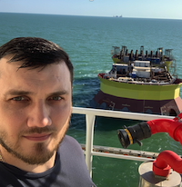

|  | Алтын Дмитрий СергеевичНачальник участка электромонтажных работГлавный энергетикСупервайзер по работе с подрядчикамиМенеджер по направлению |
| Период | Должность | Функциональные обязанности |
|---|---|---|
| 2022-настоящее время | Главный энергетик проектов | Организация эксплуатации электрооборудования до 10 кВ на период строительства и пусконаладочных работ |
| 2023-настоящее время | Супервайзер по системе электроснабжения | Организация и контроль работы Подрядчиков на проекте Заказчика, отчетность, проверка договорных обязательств |
| 2019-2022 | Начальник участка электромонтажных работ | Организация работы электромонтажного участка при строительстве морской стационарной платформы жилого модуля |
| 2017-2019 | Производитель электромонтажных работ | Организация работы, производство работ электромонтажного участка при строительстве |
| 2012-2014 | Главный инженер | Проектирование/строительство/ объектов энергетики (солнечные электростанции) |
| - ALNG2 Основание Гравитационного Типа (Заказчик - Арктик СПГ2) - Супервайзер ЭМР на период морских операций |
| - 18V0555 Ледостойкая Стационарная Платформа м.р. им. Грайфера (Заказчик - Лукойл НВЛ) - Главный энергетик ПНР |
| - 18V0505 Платформа Жилого Модуля м.р. им. Грайфера (Заказчик - Лукойл НВЛ) - Начальник участка ЭМР |
| - 16V0777 Подводная силовая кабельная линия 10 кВ с РБ на ЛСП-2 (Заказчик - Лукойл НВЛ) - Руководитель работ ЭМР |
| - 16V0900 Подводная силовая кабельная линия 10 кВ с ЛСП-1 на БК (Заказчик - Лукойл НВЛ) - Производитель работ ЭМР |
| Наименование: | Дата прохождения: |
| - Сертификат НБЖС (Подготовка в соответствии с требованиями пункта 4 раздела A-VI1 Кодекса ПДНВ) | 2022 |
| - HUET (покидание вертолета) | 2023 |
| - Промбезопасность А.1.1, Б2.4, Б2.13, Б2.18, Б8.23, Г.1.1 | 2018 |
| - Промбезопасность Б.2.1 | 2021 |
| - 5 группа по электробезопасности до и выше 1000 В (Ростехнадзор) | 2023 |
| - 3 группа по безопасности при работах на высоте | 2019 |
| - Проверка знаний по пожарной безопасности для руководителей и специалистов ответственных за пожарную безопасность пожароопасных производств | 2021 |
| Python | ⭐⭐⭐️☆︎☆︎ | HTML | ⭐⭐☆︎☆︎☆︎ | CSS | ⭐⭐☆︎☆︎☆︎ | API | ⭐⭐☆︎☆︎☆︎ |
| Aiogram | ⭐️️️⭐️️️☆︎☆︎☆︎ | FLASK | ⭐⭐☆︎☆︎☆︎ | DJANGO | ⭐☆︎☆︎☆︎☆︎ | JSON | ⭐☆︎☆︎☆︎☆︎ |